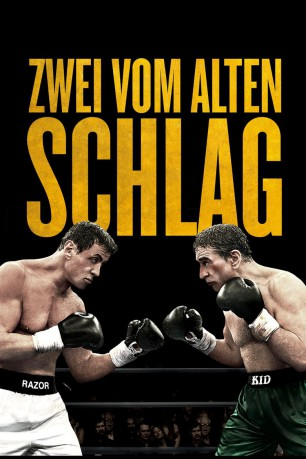
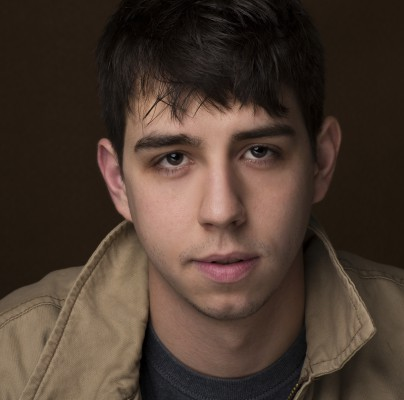

#133 Zwei vom alten Schlag
Alternativ: Grudge Match
 
 IMDB-Wertung: 6.4 / 10
IMDB-Wertung: 6.4 / 10  Metascore: 35
Metascore: 35 
Die heftige Rivalität der beiden Boxer Billy "The Kid" McDonnen und Henry "Razor" Sharp sorgte einst für Aufmerksamkeit im ganzen Land. Während der umjubelten Blütezeit konnten die beiden Jungs aus Pittsburgh jeweils einmal einen Sieg über den anderen erringen. Doch im Jahr 1983, am Vorabend ihres entscheidenden dritten Kampfes, gab Razor plötzlich seinen sofortigen Rücktritt bekannt und verweigerte eine Begründung für seine Entscheidung. Es kam nie zu dem Duell und das bedeutete auch für Karriere von The Kid den Knock-Out. Als die beiden Box-Veteranen sich 30 Jahre später wiederbegegnen, kommt es zu einem handgreiflichen Streit, der im Internet für Aufsehen sorgt. Der Box-Promoter Dante Slate Jr. sieht das Video und wittert einen großen kommerziellen Erfolg. Er unterbreitet den pensionierten Stars ein Angebot, das sie nicht ablehnen können und so steigen The Kid und Razor mit reichlicher Verspätung doch noch zum Entscheidungskampf in den Ring.
Jahr: 2013
Dauer: 113 Minuten
FSK: 12
Land: USA Studio: Warner Bros.Tonspuren: DD5.1 - ,
Untertitel:
Auflösung: 1080p (1920×1080) Größe: 7987 MB
Genre: Komödie, Drama, Sport
Regisseur:  Peter Segal
Peter Segal
Drehbuch: Tim Kelleher, Rodney Rothman, Tim Kelleher
Soundtrack: Trevor Rabin
Darsteller:
 Sylvester Stallone als Henry 'Razor' Sharp
Sylvester Stallone als Henry 'Razor' Sharp Robert De Niro als Billy 'The Kid' McDonnen
Robert De Niro als Billy 'The Kid' McDonnen Rich Little als Boxing Announcer
Rich Little als Boxing Announcer- Ireland Baldwin als Young Sally
- Mason Mackie als Young Dante
 Kevin Hart als Dante Slate, Jr.
Kevin Hart als Dante Slate, Jr. Oscar Gale als Shipyard Co-Worker
Oscar Gale als Shipyard Co-Worker- Frederick Douglas Plunkett Jr. als Walter
- Jen Kober als Tough Female Customer
 Anthony Anderson als Mr. Sandpaper Hands
Anthony Anderson als Mr. Sandpaper Hands Carrie Lazar als Nora
Carrie Lazar als Nora Don Lake als Video Game Producer
Don Lake als Video Game Producer Han Soto als Kenji
Han Soto als Kenji-  Kurt Krause als College Kid
 Alan Arkin als Louis 'Lightning' Conlon
Alan Arkin als Louis 'Lightning' Conlon Greg Sproles als Cop #1
Greg Sproles als Cop #1- Matthew Rimmer als Shipyard Assistant Manager
 Yohance Myles als Journalist #1
Yohance Myles als Journalist #1- Larry Morgan als Journalist #2
 Jai Stefan als Journalist #3
Jai Stefan als Journalist #3 Frank Pesce als Journalist #4
Frank Pesce als Journalist #4 Kim Basinger als Sally
Kim Basinger als Sally Todd Truley als Dr. Camare
Todd Truley als Dr. Camare Paul Ben-Victor als Lou Camare
Paul Ben-Victor als Lou Camare Robert Larriviere als Commercial Director
Robert Larriviere als Commercial Director Jon Bernthal als B.J.
Jon Bernthal als B.J. Joey Diaz als Mikey
Joey Diaz als Mikey LL Cool J als Frankie Brite
LL Cool J als Frankie Brite Mykel Shannon Jenkins als Shmoo
Mykel Shannon Jenkins als Shmoo- Rowan Joseph als Waiter with Telephone
- Macsen Lintz als Little Boy at Pool
 Dane Rhodes als UFC Official
Dane Rhodes als UFC Official- Kate Reinders als Groupie in Bar
 Griff Furst als ER Doctor
Griff Furst als ER Doctor- Sam Hoger als Puking Boxer
 Judd Lormand als McDonnen Car Salesman
Judd Lormand als McDonnen Car Salesman Bonnie Hellman als Angelina's Look Alike
Bonnie Hellman als Angelina's Look Alike Roy Jones Jr. als Himself
Roy Jones Jr. als Himself Michael Buffer als Himself
Michael Buffer als Himself Mike Tyson als Himself
Mike Tyson als Himself- Evander Holyfield als Himself
- Nicole Andrews als Carla , uncredited
 John L. Armijo als Bar Thug , uncredited
John L. Armijo als Bar Thug , uncredited Rex Baker als Personal Trainer / Weightlifter , uncredited
Rex Baker als Personal Trainer / Weightlifter , uncredited- Heather Ashley Boyd als EMT , uncredited
 Janet Lynn Carey als Fight Reporter , uncredited
Janet Lynn Carey als Fight Reporter , uncredited Ross P. Cook als Steel Worker , uncredited
Ross P. Cook als Steel Worker , uncredited- Jeff DeRouen als Portly Puppeteer , uncredited
 Diana Durango als Spectator , uncredited
Diana Durango als Spectator , uncredited Divine Prince Ty Emmecca als Upscale Vegas Fight Crowd , uncredited
Divine Prince Ty Emmecca als Upscale Vegas Fight Crowd , uncredited
Datei: X:\2013(N-Z)\Zwei vom alten Schlag (2013, FSK12, 1920x1080).mkv seit 06.02.2015
Festplatte: HD 2013(I-Z)-2014(A-Z)
 Es gibt insgesamt 133 Filme in der Gruppe '2013(N-Z)'
Es gibt insgesamt 133 Filme in der Gruppe '2013(N-Z)'